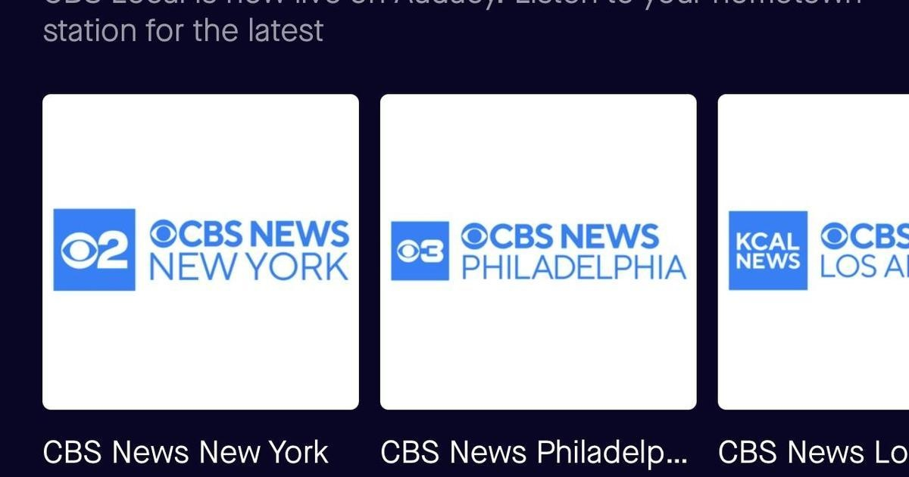

CBS News local audio streams are now available on the Audacy appAll 14 CBS News local audio streams are now available on the free Audacy app. With this new partnership you can listen to audio simulcasts of our local news streams anytime and anyplace – at home, at the office or on the go. The streams included in this partnership are CBS News Baltimore, Bay Area, Boston, Chicago, Colorado, Detroit, Los Angeles, Miami, Minnesota, New York, Philadelphia, Pittsburgh, Sacramento and Texas. To access these streams simply download the free Audacy app to your mobile device. The streams are also available on desktop at audacy.com. "In 2018, CBS Stations were pioneers in local news streaming. And today, we are providing those channels on radio streaming in a first-of-its-kind venture with Audacy," said Sahand Sepehrnia, Senior Vice President of Streaming, CBS Stations. "We continue to find innovative ways to serve our audiences, whether that's on TV, streaming, or radio." "We are thrilled to announce our strategic partnership with CBS Stations, expanding our commitment to delivering high-quality, locally relevant content to our listeners," said Tim Clarke, Senior Vice President, Digital Audio Content, Audacy. This collaboration will give our listeners unparalleled access to timely and trusted news from major cities nationwide." All CBS News local video streams are available live, 24/7 via CBSNews.com/live and on all CBS News mobile apps. Stream anytime, anywhere on your phone, tablet or connected device for iOS, Android, Apple TV, Roku, Amazon Fire TV, and game consoles like Xbox. You can also find the CBS News local video streams on Pluto TV and natively on LG and Vizio smart TVs. CBS News is also available on Paramount+. for more features. |
 |